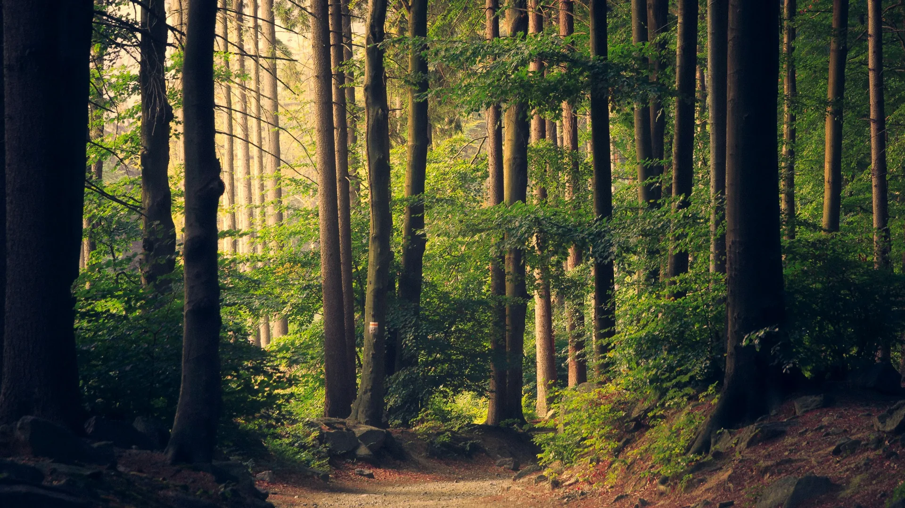

PEBRIL · QUIETLY PRESENT
A place for your pictures
Pictures have their own time, and the meaning you give them
Explore in time ↓
MEMORY IN MOTION
Explore in time
Drag the time ruler to explore
Try your own photographs
Or drop photographs here